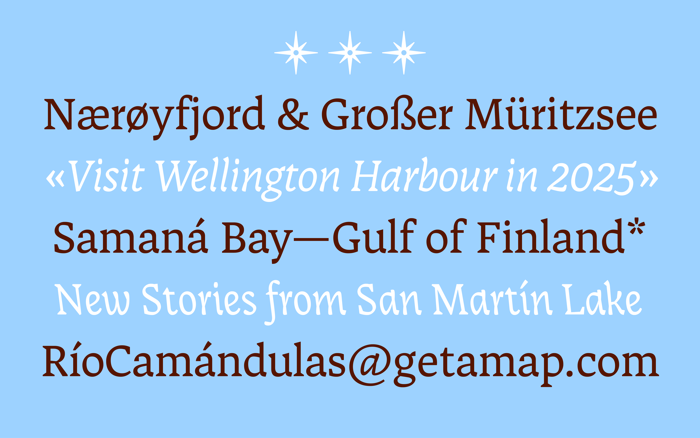

Specimen



Kompas is the exploration of an unusual concept; a text type family that includes two equal bidirectional cursives. It breaks with the habit of right-leaning italics as the main cursive style, advertising to not only look right but also left. It comes in four carefully crafted styles, including a text roman and two complementary text italic styles, leaning both left and right. As a versatile companion when setting sails for long reading texts in book, magazine, web application and poster design, it provides an elegant display italic style for titling and logo type. Never following just one way and going both directions, Kompas is meant to gently guide the curious reader. Left or right? Yes!
Hanna Boslau is a German graphic and type designer living in The Netherlands. She is fascinated by shapes and what they can express. Pushing boundaries of the expected is what drives her practice, and shaping letters and alphabets as a craft is what she loves. After graduating from communication design at BURG Halle in 2021 and the TypeMedia Master in 2024, she is now building her own type design practice. When she is not type designing, she can be found wandering the beaches of South Holland, playing experimental techno music and searching for the next type design artefact.
In a world shaped by visual communication, letters are a collective memory. Their forms are not inevitable; they’re habits we’ve built and agreed to over time. What a letter looks like is the result of a collective expectation.
That’s where my curiosity starts. I’m interested in what lies outside those expectations—what type can be once we step beyond what we are used to. In my practice, I explore the blank spots in type design: the overseen, the unfamiliar, the weird, the not-yet-standard. It’s a space of possibility, a hidden gem in the terrain.
The journey began with a blank map: an outline of all things type design I wanted to explore, areas worth revisiting, and the parts I hadn’t yet discovered. This included cursive italics and building a text type family with several styles. One corner of the map caught my interest in particular: left-leaning cursives, the somewhat overlooked sibling of the familiar right-leaning italics. My curiosity deepened when I stumbled upon Jo de Baerdemaeker’s research, which linked reverse italics to historic cartography. Out of personal interest, I had been collecting maps myself and realised that almost all of them use left-leaning italics to label areas of water. It was meant to be.
However, knowing why isn't knowing how. How do you draw a left-leaning italic that works in harmony with its right-leaning counterpart as well as a roman? The books were silent on this matter, a text typeface including two equal true italics was nowhere to be found. So I turned to the source: cursive writing. Countless sheets of calligraphy followed, filled with experiments in slants, weight, and contrast. Slowly, a solution emerged—a construction model I developed and called the Bookshelf Principle. It became the foundation for several sketches, refining shapes and testing their balance.
The final design leaned into the unconventional. The italics carried rather unusual stroke shapes, yet they stayed true to the logic of the construction principle. What began as an exercise in creating a text typeface with two matching italics evolved into something with its own voice—a typeface with dynamic complexity, showing its calligraphic roots while being well readable in long texts.
Of course, it wouldn’t have been real if it wasn’t for the challenges. It was tempting to take the easy route and simply slant what already existed. I knew that too much eccentricity would overwhelm the reader, while too little would make the design lifeless. After all, my creative escape was the last style that followed the family: the reverse italic display. Inspired by Renaissance maps and the work of 16th-century cartographer Gerardus Mercator, it brought elegance and personality to the family, suited for large titles and refined logotypes.
That's how Kompas was discovered. At this point, it is not a finished typeface yet but a work in progress and an ongoing journey–until there's land in sight.